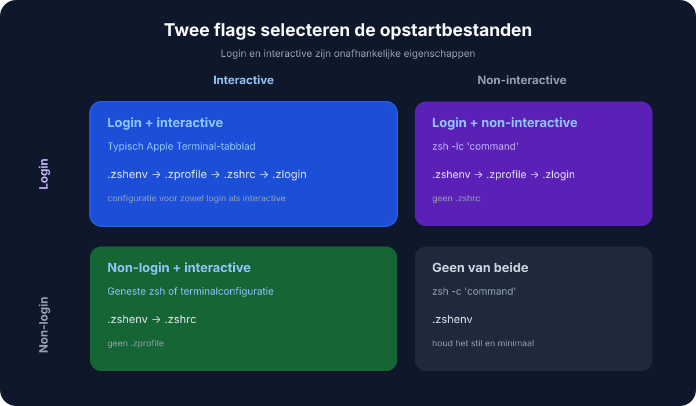
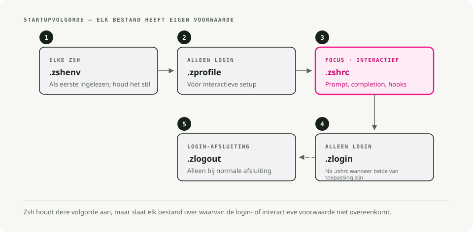

Automatische vertaling
Dit artikel is automatisch vertaald vanuit de oorspronkelijke Engelse versie.
Zsh-startbestanden: ~/.zprofile vs ~/.zshrc op macOS en Linux
Als je terminal traag aanvoelt, of als je omgevingsvariabelen niet worden geladen waar je ze verwacht, kom je waarschijnlijk in aanraking met de opstartvolgorde van Zsh.
De scheiding tussen ~/.zprofile en ~/.zshrc Dit is een van de meest voorkomende oorzaken van verwarring wanneer je overstapt op Zsh, vooral op macOS, waar de standaardinstellingen anders functioneren dan onder Linux.
TL;DR
~/.zprofile het dient ter opstelling van de omgeving. Het wordt één keer uitgevoerd bij elke inlog, wat op macOS betekent dat het één keer per terminaltab gebeurt. Plaats uw PATH, EDITORen versiebeheersystemen zoals fnm of pyenv Daar.
~/.zshrc Het dient ter interactieve configuratie. Het wordt uitgevoerd telkens wanneer je een nieuwe shell start. Plaats aliassen, promptthema’s en toetscombinaties daar.

Het opstartproces van de shell
Om te weten waar dingen moeten worden geplaatst, moet je weten wanneer bestanden worden geladen. Zsh beschikt over een specifieke hiërarchie.
Login-shell versus interactieve shell
Een login-shell is de eerste shell die je krijgt na authenticatie. Op macOS is elke nieuwe terminaltab of -venster standaard een login-shell. Op Linux start het openen van een terminal doorgaans een niet-login interactieve shell, wat de oorzaak is van veel verwarring tussen de verschillende platforms.
Een interactieve shell is alles waarin je commando’s kunt typen.
Dit is wat er eigenlijk gebeurt wanneer je een terminal opent op macOS:

De laadvolgorde
~/.zshenv(optioneel). Werkt voor elke shell, inclusief niet-interactieve scripts. Plaats hier geen uitvoer of zware logica — dit kan scripts die je configuratie importeren, beschadigen. Gebruik het alleen voor omgevingsvariabelen die overal aanwezig moeten zijn, wat voor de meeste mensen zelden voorkomt.~/.zprofile. Werkt alleen voor inlogshellen. Je configuratiefase.~/.zshrc. Werkt voor interactieve shells. Uw fase van personalisatie.~/.zlogin(optioneel). Wordt uitgevoerd aan het einde van de opstartprocedure van een inlogshell.
Waar komt wat terecht?
~/.zprofile: de omgevingslaag
Dit is waar je de elementen instelt die door alle andere processen worden geërfd — paden, variabelen en beheerders van taalversies.
Wat hier thuishoort:
PATHAanpassingen.- Omgevingsvariabelen:
EDITOR,LANG,GOPATH,JAVA_HOME. - Initialiseer de tool die invloed heeft op de omgeving:
pyenv,rbenv,fnm,cargoDeze hoeven slechts één keer te worden berekend. Als u ze erin plaatst.zshrc, ze worden opnieuw berekend telkens wanneer je een sub-shell opent of een script uitvoert, waardoor zowel tijd wordt verspild als dubbele registraties in je bestand kunnen ontstaan.PATH.
# ~/.zprofile
# 1. Set up your PATH
# Local bin first so your tools override system ones
export PATH="$HOME/.local/bin:/opt/homebrew/bin:$PATH"
# 2. Global variables
export EDITOR="nvim"
export VISUAL="nvim"
export LANG="en_US.UTF-8"
# 3. Version managers (the heavy ones)
# Doing this here keeps shell startup fast
eval "$(fnm env --use-on-cd)"
eval "$(pyenv init -)"
~/.zshrc: de interactieve laag
Dit is waar je de shell die je daadwerkelijk invoert, kunt aanpassen.
Wat hier thuishoort:
- Aliassen:
alias g='git'. - Je prompt: Starship, Powerlevel10k, Pure.
- Voltooide suggesties:
compinit. - Toetscombinaties:
bindkey. - Shell-opties:
setopt autocd,setopt histignorealldups.
Deze zijn alleen van belang wanneer er een mens achter het toetsenbord zit. Een script dat op de achtergrond draait heeft geen toetsaansporing of git-alias nodig.
# ~/.zshrc
# 1. Prompt
autoload -Uz promptinit && promptinit
prompt pure
# 2. Aliases
alias ll='ls -lah'
alias g='git'
alias gs='git status'
# 3. Shell options
setopt autocd # cd by typing the directory name
setopt histignorealldups # skip duplicate history entries
setopt share_history # share history across tabs
# 4. Completions
autoload -Uz compinit && compinit
Waarom niet alles in één bestand plaatsen?
U vraagt zich misschien af: als .zprofile loopt eerst, waarom stop je je aliases daar niet en sla je ze over .zshrc volledig?
Het komt neer op erfgenomen eigenschappen versus herdefinitie.
Omgevingsvariabelen worden geërfd
Wanneer je export EDITOR="vim" In een oudershell wordt het door elke kindprocessus geërfd: subshells, scripts en programma’s. Je stelt het één keer in en het verspreidt zich langs de hiërarchie, en dat is ook de reden waarom .zprofile is de juiste plek voor export### Aliassen en functies doen dit niet
Aliassen zoals alias g='git' Shellfuncties zijn lokaal aan de huidige shell. Ze worden niet doorgegeven aan kindshells.
Als je een alias definiërt in .zprofile, het bevindt zich in je top-level inlogshell. Zodra je iets typt zsh Om een sub-shell te starten of een script uit te voeren, is die alias verdwenen. Om aliases overal beschikbaar te hebben, moet u ze in elke nieuwe interactieve shell opnieuw definiëren. Dat is precies wat .zshrc is bedoeld voor.
Scripts hebben geen menselijke functies nodig
Wanneer je een shell-script uitvoert (./deploy.sh), hiermee wordt een nieuwe, niet-interactieve shell gestart. Hij heeft geen prompt van u nodig, geen git-aliassen, en hij wil zeker niet wachten op oh-my-zsh om het laden af te ronden. De interactieve configuratie wordt behouden. .zshrc Dit betekent dat scripts snel en schoon worden uitgevoerd, zonder dat uw persoonlijke aanpassingen binnendringen.
Veelvoorkomende valkuilen
Implementeren nvm of pyenv in .zshrc
Je opent een nieuwe terminaltab en het duurt twee of drie seconden voordat je iets kunt typen. Versiebeheersystemen hebben doorgaans een zware initialisatieprocedure. .zshrc wordt elke keer uitgevoerd. Verplaats ze naar ~/.zprofile en de vertraging verdwijnt.
Een groeiend PATH
Uw $PATH er blijven dezelfde mappen vijf keer staan. De oorzaak is bijna altijd export PATH="$HOME/bin:$PATH" geplaatst in .zshrc: bij elke herlading (source ~/.zshrc) of voegt de sub-shell de pad opnieuw toe. Verplaats PATH Definities voor ~/.zprofile.
Herlaad na wijzigingen
Veranderingen in ~/.zprofile is niet van toepassing op uw huidige shell, omdat .zprofile wordt alleen gelezen bij inloggen. U kunt de tab sluiten en er een nieuwe openen (de eenvoudigste optie), of het programma uitvoeren. source ~/.zprofile handmatig. .zshrc, gewoon:
source ~/.zshrc
Een configuratie die werkt op macOS en Linux
Als je heen en weer switcht tussen verschillende machines (macOS op het werk, Linux thuis, of omgekeerd), kom je voor een probleem te staan. Linux-terminalen starten vaak als niet-inlogschillen, waardoor ze bepaalde stappen overslaan. ~/.zprofile volledig.
De gebruikelijke oplossing is om de bron te halen .zprofile van .zshrc wanneer het nog niet is geladen:
# ~/.zshrc
# On Linux/non-login shells, make sure the environment is set
if [[ -o interactive && ! -o login ]]; then
[[ -f ~/.zprofile ]] && source ~/.zprofile
fi
# ... rest of your interactive config
Samenvatting
| Bestand | Doel | Voorbeelden |
|---|---|---|
~/.zshenv |
Kritieke omgevingsvariabelen | ZDOTDIR (alleen voor geavanceerde gebruikers) |
~/.zprofile |
Omgevingsinrichting | PATH, EDITOR, eval "$(pyenv init -)" |
~/.zshrc |
Interactieve configuratie | alias, prompt, bindkey, compinit |
Twee regels dekken het grootste deel hiervan. Variabelen worden doorgegeven langs de procesboom, dus export thuist in .zprofile. Aliassen en functies erven niet, dus ze horen in .zshrc en moeten voor elke nieuwe interactieve shell opnieuw worden gedefinieerd. Als nieuwe tabs traag aanvoelen, ligt de oorzaak bijna altijd bij een zware pyenv init of nvm.sh geplaatst in .zshrc in plaats van .zprofile.
Belangrijkste conclusies
- Gebruik
.zprofilevoor de configuratie van de login-shell, zoals het initialiseren van PATH in macOS Terminal. - Gebruik
.zshrcvoor interactief shellgedrag zoals aliases, prompt-configuratie, automatische invulling en shellopties. - Maak geen dubbele wijzigingen aan de PATH in beide bestanden; duplicaten maken het debuggen van de startvolgorde moeilijk.
- Als je twijfelt, zet het opstarten van de omgeving dan hier.
.zprofileen interactieve gemakken in.zshrc.
Referenties
- Documentatie over Zsh-startopbestanden - Volgorde van bestanden bij opstarten en afsluiten. Handleiding voor Apple Terminal-gebruikers - Gedrag van de macOS-terminal.